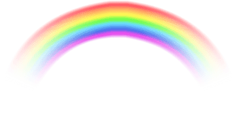
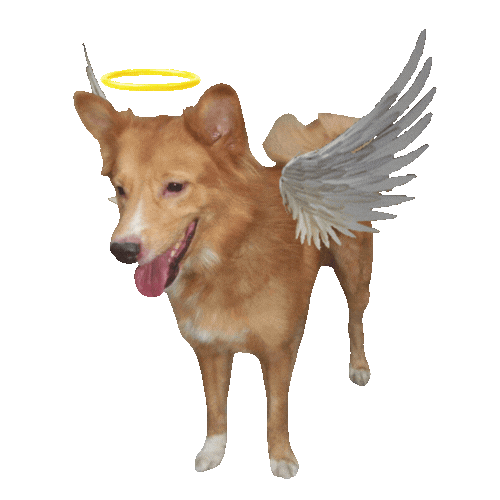
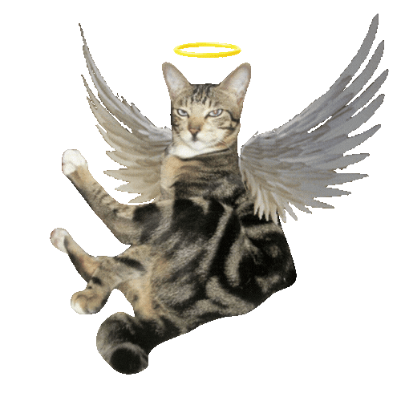
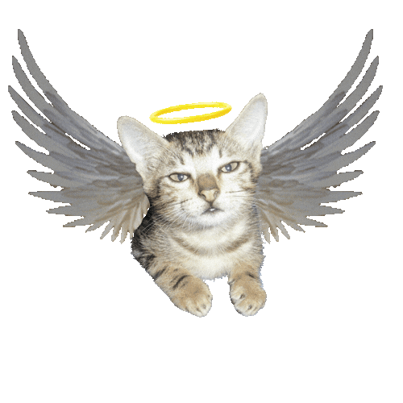
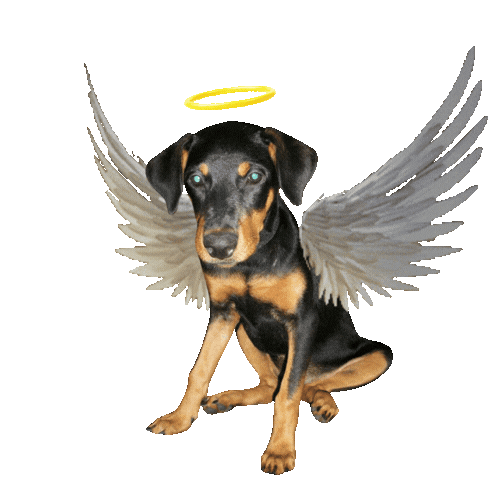
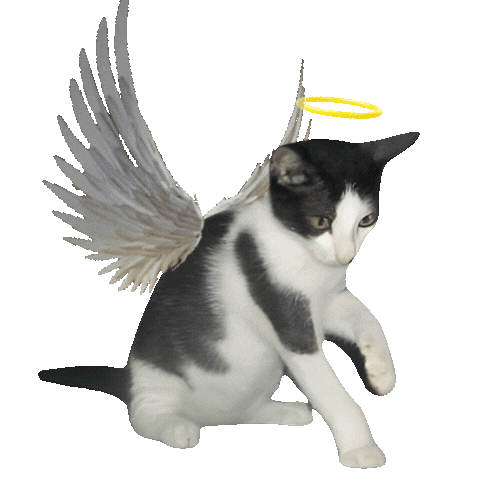

This place is called the Rainbow Bridge. It’s where I remember my pets who have passed on. According to folklore, the Rainbow Bridge is a peaceful spot in heaven where beloved animals wait comfortably until they can be reunited with the humans who loved them.
I like to imagine that their bowls are always full, their water is fresh, and there’s a big open field where they can run and play together. Whatever pain or sickness they had in life is gone, and they’re healthy and full of energy again.
I believe they’re happy there, even if they might be missing a certain human. This page is dedicated to my best friends. I love them, and I miss them very much.




